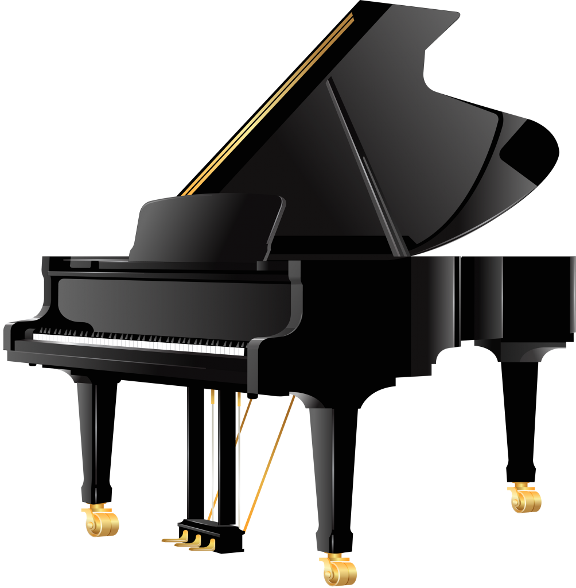

Building this website is like adding a new chapter to my coding journey, a space where my projects come to life, and my passions find a digital home. As a member of the Software Systems Student Society (SSSS) at SFU, I'm excited to showcase my skills and connect with fellow enthusiasts. From crafting a maze-navigating robot to strategizing an autonomous LEGO Sumo bot, each project has been a unique adventure in problem-solving and creative coding. Now, this website project adds a personal touch to my coding odyssey, blending my technical side with my love for swimming, tennis, composing, and more. It's a snapshot of my growth, a place where my journey unfolds naturally. As I continue this exploration, I'm not just building a website; I'm shaping an experience, ready for the coding endeavors that lie ahead.

Aside from my computer science endeavors, I seamlessly integrate my passion for piano into my role as a committed music educator. Since 2016, I've shared the joy of music as a self-employed piano teacher in Vancouver, BC, tailoring engaging lessons for students of diverse ages and skill levels. My love for the piano extends beyond teaching; I actively collaborate in a piano trio, contributing enchanting melodies for weddings on two occasions. The thrill of live performances has led me to play with esteemed orchestras, including the Richmond and Chilliwack Symphony Orchestras. My dedication to musical excellence has garnered awards, including being a Gold Medalist in the International Young Gifted Musicians Festival. Beyond accolades, I've volunteered at senior homes, offering monthly piano performances, and taught music theory to enhance students' musical knowledge. As my musical journey intertwines with teaching, the prospect of combining my love for piano with coding endeavors fuels my ongoing pursuit of a harmonious fusion between art and technology.